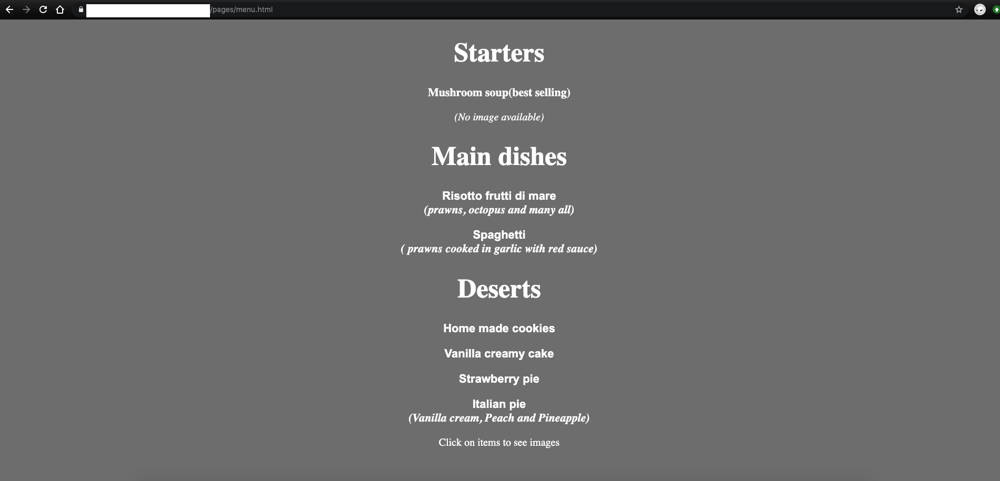
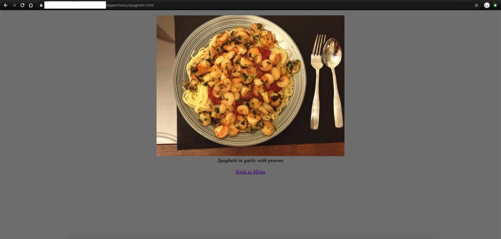

Prior to working as a software engineer I used to work as croupier in two
Maltese casinos. Dealing games such as roulette, blackjack and at later
stages Texas hold 'em poker too. After 4 years, at the age of 22, I
realized that this is not what I want to do for the rest of my life. I was
asking myself what new profession I could start if I had to stop working
as croupier.
Roulette - a casino game which have been around since the 18th century.
Being my extended family's uncertified but effective PC technician, I did
knew the basics of computers by around the age of 12. I knew what RAM, CPU
and hard disk were and why a computer may be performing slow. I also knew
that if your Ethernet cable was unplugged that is very likely the be the
reason for not internet connection. Ohh, and I certainly knew how to
format hard disks! That was my solution to PCs with janky performance
problems. It worked most of the time. When it didn't, I told my clients to
go to a real technician
😬.
Back to me being a croupier and wanting to change my profession - I always
loved computers. I had fallen in love with computers when my family bought
a home PC in 2002. My love for computers grew even stronger in my late
teenage when I was assembling gaming computer hardware for myself and
friends. The idea of me working as an IT professional was intriguing. I
started to look in which field I could work as an IT professional. Do I
become the certified PC technician that I never was 🤔? Or perhaps should
I look at other jobs in IT? What if I become a programmer? but how
exactly? These were the questions that I was asking to myself and that was
the time when I started to be curious about software. Java was the first
programming languages I came across with. I remember being very excited
after (long time) I managed successfully execute a hello world app on my
machine. Then I took it further. In few weeks I built several
micro-applications which runs via the terminal. Then I came across HTML
and CSS. I found these two much easier and in few days I had built an
amateur website - I created a website for a fictitious restaurant and it's
menu was full of food which I was cooking at home at that time, including
photos of the meals! I was doing something new and I was loving it! By
this time I was sure that I want to be a software engineer.

Background color, italic fonts and anchor tags which links to internal
pages. This is part of what I built days after I heard with "HTML" and
"CSS". Despite knowing it was basic and also very different than
professional websites I was still over the moon with my achievements.

Using the image tag was another milestone that I reached on the same
day. 🎉
In 2012 I started to read for an International diploma in computing. After
graduating I started reading for BSc. Computer Science(System Engineering)
in 2013. The degree focused more on system engineering than the
fundamentals of computer science but at that time I believed it was
sufficient to land me my dream job at the time - working as a Java
developer.
While studying for a bachelor degree, at the end of the year 2014 I was
offered a working opportunity as a full stack developer. Working with PHP
and frontend technologies. It wasn't exactly my ambition to work as a
software developer if I wasn't going to use Java as a programming language
but I saw this as a great opportunity to start with and I accepted the
offer.
Fast forwarding to today - I have never looked back. I've spent an amazing
6 years working as a professional fullstack developer. It has been an
amazing journey and the ever-changing technologies related to web
applications fascinates me.